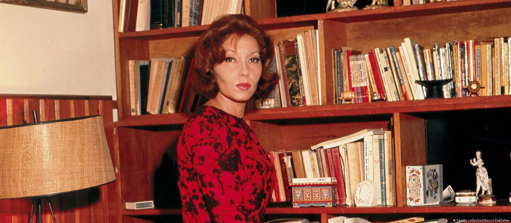

Clarice Lispector
Nascida Chaya Pinkhasivna Lispector (Chechelnyk, 10 de dezembro de 1920 – Rio de Janeiro, 9 de dezembro de 1977), foi uma escritora e jornalista de origem ucraniana-judaica (asquenazita). Radicada no Brasil desde a primeira infância, naturalizou-se brasileira em 1943.[3] Autora de romances, contos e ensaios, é considerada uma das escritoras brasileiras mais importantes do século XX.[4][5] Sua obra está repleta de cenas cotidianas simples e tramas psicológicas, reputando-se como uma de suas principais características a epifania de personagens comuns em momentos do cotidiano. Quanto às suas identidades nacional e regional, declarava-se brasileira e pernambucana.

Suas Obras
Suas principais obras marcam cada período de sua carreira. Perto do Coração Selvagem foi seu livro de estreia, publicado quando Clarice tinha 24 anos de idade; Laços de Família, A Paixão segundo G.H., A Hora da Estrela e Um Sopro de Vida são seus últimos livros publicados. Morreu em 1977, um dia antes de completar 57 anos, em decorrência de um câncer de ovário. Deixou dois filhos e uma vasta obra literária composta de romances, novelas, contos, crônicas, literatura infantil e entrevistas.